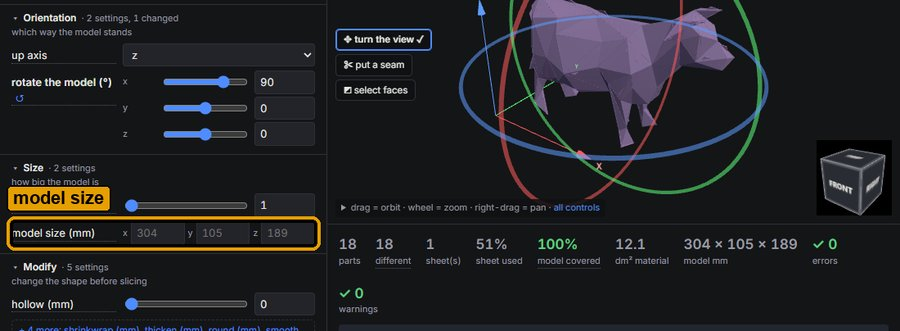
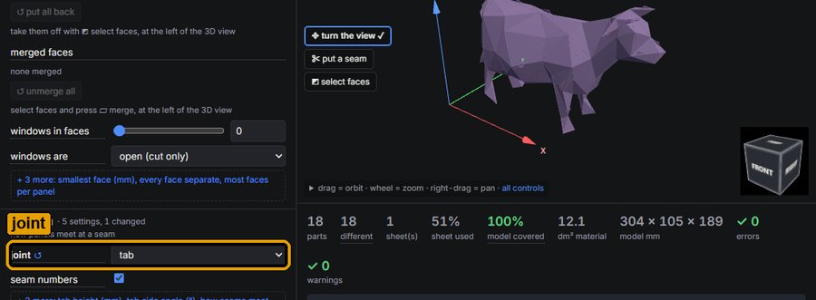
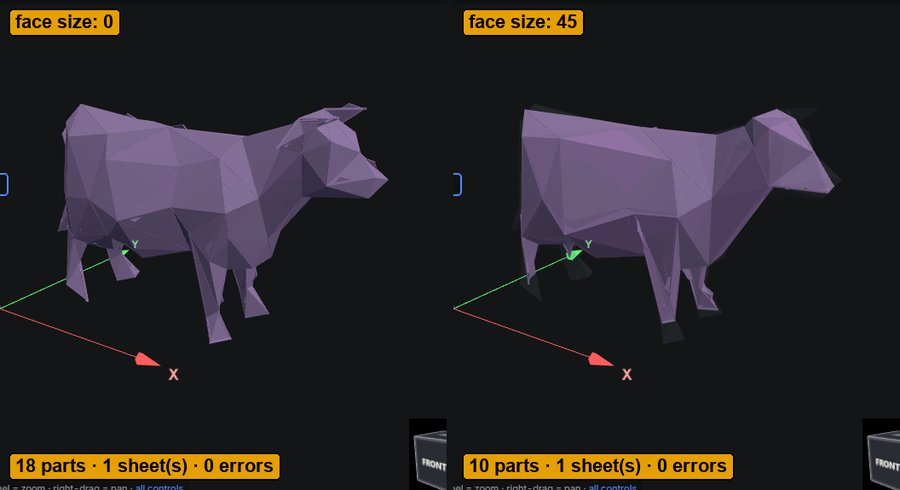
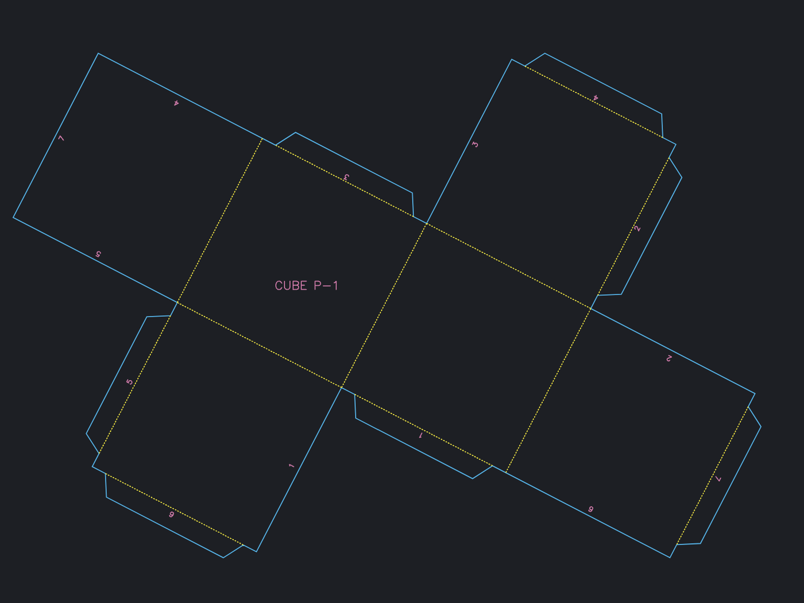
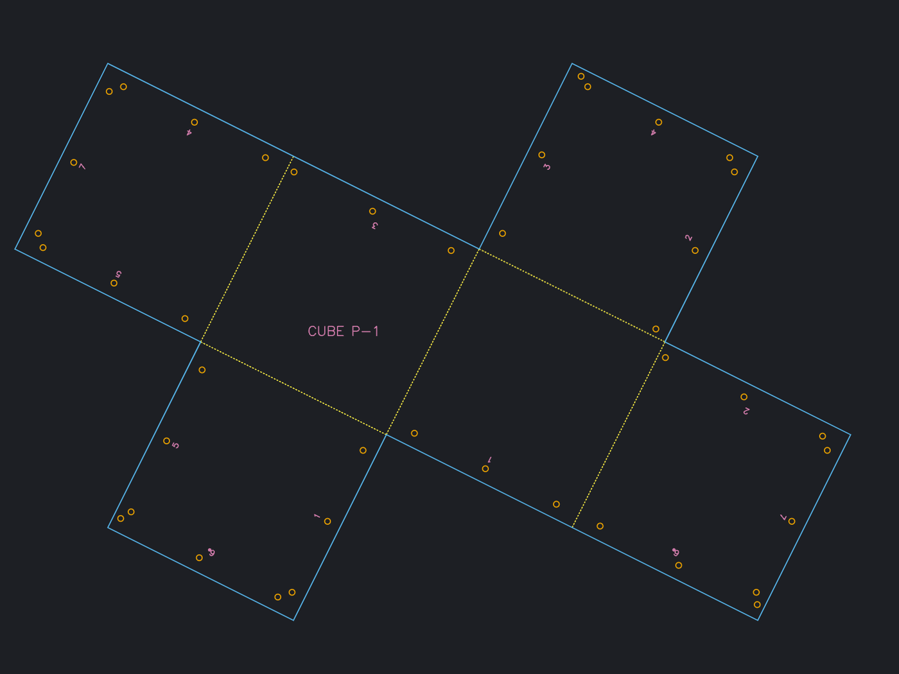
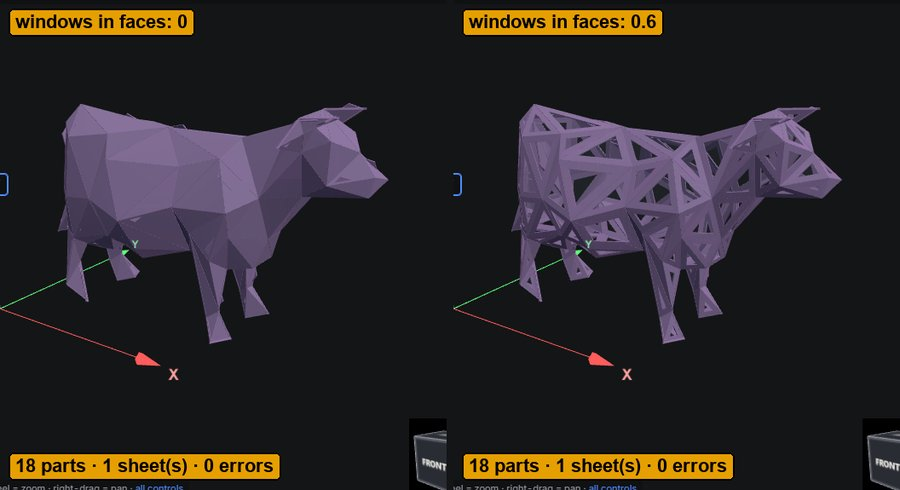
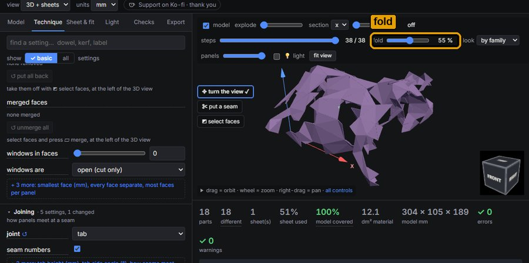

Papercraft from a 3D model: unfold it into flat panels
Lamina simplifies the surface of a model to the face size you choose and unfolds it into flat panels with score lines. You cut the panels, fold them on the lines and join the seams. It makes papercraft nets, as Pepakura does, and also joints for cardboard, leather, cloth and sheet metal. Lamina is free and runs in your browser.
- 1. Start hereThe steps every job has: your model, its size, the checks, the files. Open
- 2. Your machineLaser, router or 3D printer, the material and its thickness. Open
- 3. Your technique: this pageThe settings of Folded Panels, and what each one changes.
Which shapes work
Every closed shape, and open surfaces such as a mask or a clothing pattern. A low-poly model with large faces is the easiest to fold. Hollows and undercuts give more seams, not errors. The sheet must fold: paper, card, leather, thin metal. A sheet too thick to fold, such as plywood, gets a warning.
Set the technique
Every picture in these steps shows one model: the cow that the link opens. An orange ring with a label marks the control to use. To use your own model, upload it on the Model tab: Start here shows how.
- Open Lamina on Folded Panels. It opens with the cow unfolded into
panels. Click the Technique tab.

- Set face size. Larger faces give fewer, simpler panels that are easier to fold. At 0, every face of
the model stays, as on this low-poly cow.

- In joint, pick how the seams join. The joints are listed below.

- Keep seam numbers on. The two panels of a seam then carry the same number.

- Read the errors and warnings under the 3D view after each change. The buttons under a message
fix it.

What each setting changes
Each picture shows the same cow from the same side, with one setting changed. The label at the bottom gives the counts that Lamina shows under the 3D view.
face size
How large the flat faces are. Lamina simplifies the model to this size before it unfolds it.
Larger faces give fewer panels and fewer folds, and less of the shape. At 0, every face of this low-poly cow stays: 18 panels. At 45 mm it has 10 panels, and the legs and the horns are simpler. Joints need faces a few times larger than the joint.

joint
What closes a seam. The joint follows the material: glue tabs for paper, laces for leather, ribs for sheet metal.
The joint changes the number of parts. Glue tabs are part of the panels: 18 parts. Laces need only holes: 15 parts on this cow. Ribs are parts of their own: 100 parts, most of them small ribs. Some joints show more settings, such as hole diameter.
The pictures show the same cube, unfolded, with three joints. On a small shape the joint is large enough to see.

tab
A glue tab on one of the two edges. Paper and card.

laced
Holes on both edges, for a lace or a zip tie. Leather and cloth.

rib
Slots, and a separate angle rib that goes in from the back. Sheet metal.
windows in faces
Opens every face with a window of its own shape, for light. 0 is no window, 1 is as large as the frame allows.
The number of panels stays, 18 on this cow. The frame round each window is never narrower than the minimum feature width on the Checks tab. With windows, put a light inside: the Light tab shows it.

More settings
| Setting | What it does | It changes |
|---|---|---|
| hole diameter | The holes of rivet, laced, loops and strip joints. | It shows only with those joints. A small face gets smaller holes. |
| windows are | open: the window is cut out. paper: a pane closes each window. | With paper, you also get a paper part for each window, and the Light tab shows the glow. |
| dashed fold lines | Fold lines as a dashed cut, not a score. | For thick material that does not fold on a score line. |
| thickness (Sheet & fit) | The thickness of your sheet. | The check that the sheet can fold. |
| material (Sheet & fit) | Paper, card, leather, sheet metal, or PLA and PETG. | With PLA or PETG, the panels print with a hinge at every fold: 3D print it as flat parts. |
Fifteen joints
Glue tabs for paper and card. Laces and rivets for leather and cloth. Strips for cardboard. Slotted angle ribs for sheet metal. And more: tongues, puzzle tabs, loops and others, each with its own sizes. For printed panels, click and snap close the seams without glue.
A picture of each joint is on the main page.
Seams where you want them
Lamina places the seams for you. To choose them yourself, use the put a seam tool of the 3D view: click an edge, or drag along edges. The sheet is cut apart there, and the panels are laid out round your seams.
Then: the machine, the checks and the files
These steps are the same for every technique, so they have their own pages.
- On the Sheet & fit tab, click Laser: it also covers knife cutters such as a Cricut, and cutting by hand. Then choose your material and its thickness: Laser, router or 3D printer.
- Correct every error and download the files: Start here, steps 10 to 13. To print the sheets on paper and cut them by hand, open other formats on the Export tab and click PDF.
- Fold the panels on the score lines and join the seams by their numbers. To see the panels fold up, drag
fold over the 3D view.

Three more examples to open
These are other models. Each one is an example in Lamina: on the Model tab, click example and pick its name.
paper_lamp: windows closed with paper
A lantern of twelve dodecahedra. Its windows are set to paper, and the Light tab shows the glow before you cut.

fold_lamp: printed flat, folded up
A lamp shade printed as one flat panel, with a V groove along every fold.
lion_head: keep only a part, a mask
Put a seam round the back of the head, select the back with one click and remove it. Only the mask is cut: the face with its whole mane.